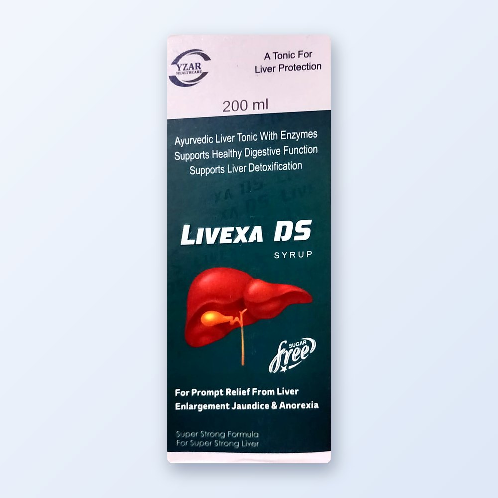
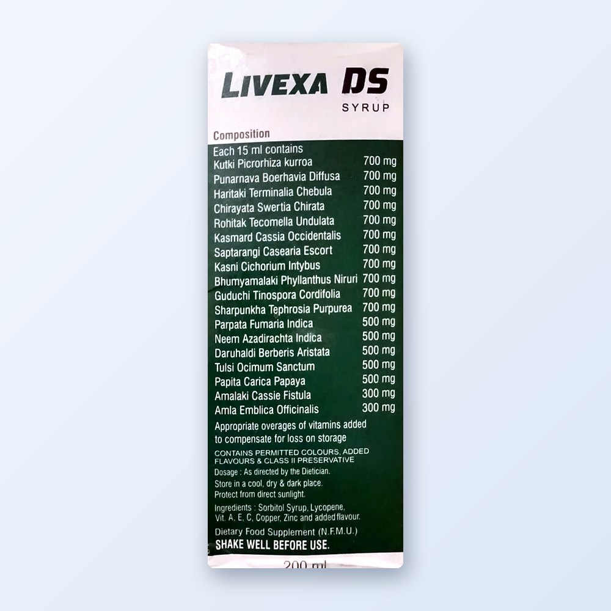
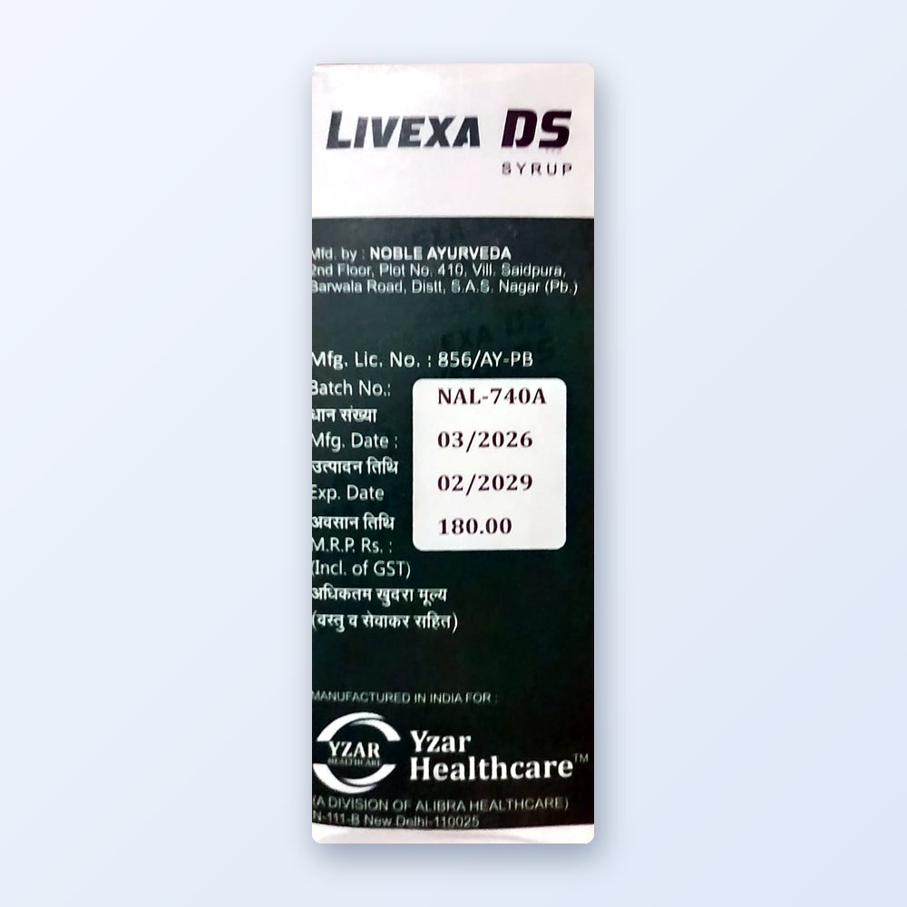
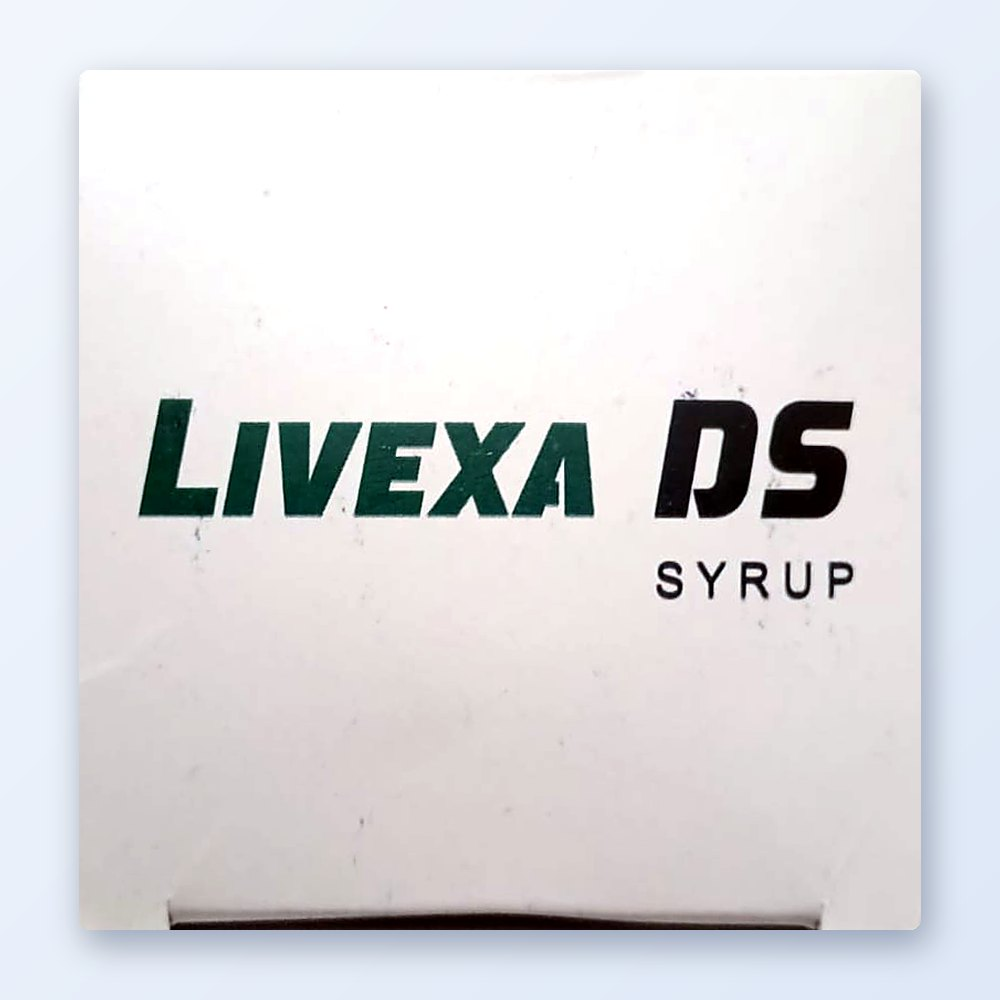

Livexa DS Syrup
Ayurvedic liver tonic with enzymes, 200 ml · Pack: 200 ml bottle
Price on WhatsApp
Livexa DS Syrup is an Ayurvedic liver tonic with enzymes that supports healthy digestive function and liver detoxification.
Consult your doctor before use. Read the label and leaflet carefully.
Product Details
About Livexa DS Syrup
A tonic for liver protection, made with Ayurvedic herbs and enzymes. It is sugar free. Marketed by Yzar Healthcare. See the product photos for the full composition printed on the pack.
Uses & Benefits
- A tonic for liver protection
- Supports healthy digestive function
- Supports liver detoxification
- Sugar free
How to Use
As directed by the dietician. Shake well before use.
Warnings & Precautions
- Dietary food supplement.
- Keep out of reach of children.
Storage
Store in a cool, dry and dark place. Protect from direct sunlight.
Product Information
| Composition | Ayurvedic liver tonic with enzymes, 200 ml |
| Pack size | 200 ml bottle |
| Manufacturer | Manufactured by Noble Ayurveda, SAS Nagar (Punjab). Marketed by Yzar Healthcare (a division of Alibra Healthcare), New Delhi |
| Prescription | Not required |